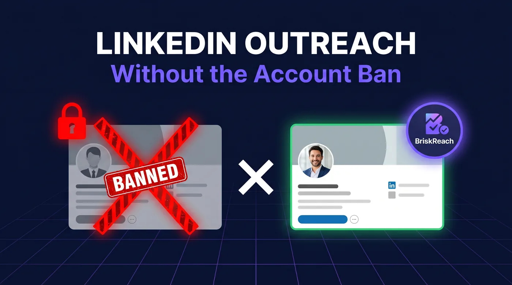

LinkedIn Outreach Without Restriction: What Actually Keeps Accounts Safe

If you want LinkedIn outreach without restriction, the first thing to accept is this: most teams do not get flagged because LinkedIn outreach stopped working. They get flagged because they treat LinkedIn like a bulk email tool. That is where BriskReach fits. It was built around controlled outbound, visible limits, reply-aware pauses, and the option to use a real contracted Rep instead of forcing more volume through your own profile.
The wrong question is "Which automation tool lets me send more?"
The right question is "What makes my account look normal enough to keep sending next month?"
That is what determines whether outreach compounds or gets shut down.
Why LinkedIn Restrictions Happen in the First Place
LinkedIn does not need to read your intent. It reads your behavior.
An account starts looking risky when activity stacks up in ways that real people do not usually operate:
- too many connection requests in a short window
- too many pending invites sitting unanswered
- follow-ups keep firing after a prospect already replied
- messages go out at exact intervals
- activity ramps too fast on a new or lightly used account
- first messages include links or push too hard
Most teams think the problem is the tool. Usually the problem is the motion.
A bad motion with a fancy dashboard is still a bad motion.
The Real Model for LinkedIn Outreach Without Restriction
Safer LinkedIn outreach comes down to six things.
1. Lower daily volume
If one account needs to do everything, you are already pushing too hard. Smaller daily caps are slower, but they keep the account alive.
2. Better targeting
The less relevant the lead list, the worse the acceptance rate and the weaker the replies. That is how accounts drift into restriction territory.
3. Warmup instead of instant scale
A sender should not jump from zero activity to aggressive outbound on day one. Gradual ramps look normal. Sudden spikes do not.
4. Jitter and working hours
Real people do not send every message 90 seconds apart at 2:13 AM. Schedules need variation and business-hour control.
5. Reply-aware pausing
This is one of the biggest misses in low-quality outreach systems. If someone replies, the sequence should stop for that prospect immediately.
6. More capacity without burning your own profile
This is where teams usually make the wrong move. They keep increasing load on the same founder or sales profile until it breaks.
What Most Outreach Teams Get Wrong
They optimize for sends instead of signals.
More sends feels productive. It is often the fastest path to lower acceptance rates, weaker conversations, and a restricted account.
The teams that stay active on LinkedIn for longer periods usually operate with stricter controls:
- each sender has clear volume limits
- campaigns are reviewed before launch
- follow-ups stop after replies
- new senders warm up gradually
- inbox handling is visible, not scattered
That is less exciting than "scale to 500 prospects a day," but it is what actually lasts.
Where BriskReach Helps
BriskReach is useful because it is built around those controls instead of treating safety like an afterthought.
On the main product side, the platform shows working hours, warmup, jitter, and reply pauses before the next action is queued. That matters because a lot of outreach damage happens when teams cannot see risk building until after launch.
BriskReach also gives teams two paths.
Bring your own LinkedIn account if you already have a profile you want to use with tighter controls.
Or use a BriskReach Rep if you want outbound capacity without leaning harder on your personal account. The Rep model is simple: a real contracted human profile, identity setup included, with a live-delivery SLA and refund terms if the delivery window is missed. That is a different model from telling one founder account to carry the entire campaign load.
A Simple Operating Rule
If your outreach system depends on one profile sending at the edge of what LinkedIn will tolerate, you do not have a stable system.
You have a countdown.
LinkedIn outreach without restriction is not about finding a magic setting. It is about building a motion that looks controlled, relevant, and human at every step.
That means better lists. Better pacing. Better handoff after replies. And when you need more sender capacity, adding it in a way that does not put your core profile at risk.
Final Take
The best LinkedIn outreach strategy in 2026 is not the one that promises the most automation. It is the one that gives you the best chance of still operating 90 days from now.
If you need more outbound capacity and do not want to push your own account into restriction territory, look at the BriskReach Rep page. It is the clearest path if the goal is simple: run LinkedIn outreach without restriction pressure on your personal profile.